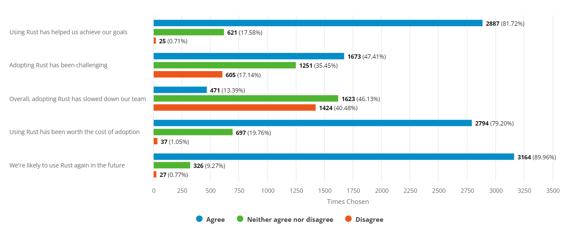

Greetings Rustaceans!
Another year has passed, and with it comes another annual Rust survey analysis! The survey was conducted in December 2021.
We’d like to thank everyone who participated in this year’s survey, with a special shout-out to those who helped translate the survey from English into other languages.
Without further ado, let’s dive into the analysis!
A Global Community
The Rust community continues to grow, with this survey having the largest number of complete survey responses (9354 respondents), exceeding last year's total by roughly 1500 responses.
90% of respondents said that they use Rust for any purpose, while 5% stated they had used Rust at some point in the past but no longer do, and 4% stated they have yet to use Rust at all.
The survey was offered in 10 languages with 78% filling out the survey in English followed by Simplified Chinese (6%), German (4%), and French (3%). Despite English being the language most respondents completed the survey in, respondents hailed from all around the world. The United States was the country with the largest representation at 24% followed by Germany (12%), China (7%), and the U.K. (6%). In total 113 different countries and territories were represented through this survey!
English, however, is not the language of choice for all Rustaceans with nearly 7% preferring not to use English as a language for technical communication. An additional 23% of respondents prefer another language in addition to English. The most commonly preferred languages (besides English) roughly follow where Rustaceans live with Simplified Chinese, German, and French being the top 3. However, Japanese, Simplified Chinese, and Russian speakers were the most likely to prefer not to use English at all for technical conversation.
Using Rust
The percentage of people using Rust continues to rise. Of those using Rust, 81% are currently using it on at least a weekly basis compared to 72% from last year's survey.
75% of all Rust users say they can write production ready code, though 27% say that it is at times a struggle.

Overall, Rustaceans seem to be having a great time writing Rust with only 1% saying it isn't fun to use. Only a quarter of a percent find Rust doesn't have any real benefit over other programming languages.
Rust at Work
Rust can now safely be classified as a language used by people in professional settings. Of those respondents using Rust, 59% use it at least occasionally at work with 23% using Rust for the majority of their coding. This is a large increase over last year where only 42% of respondents used Rust at work.

Adopting Rust at work seems to follow a long but ultimately worthwhile path for a lot of Rustaceans. First, 83% of those who have adopted Rust at work found it to be "challenging". How much this is related to Rust itself versus general challenges with adopting a new programming language, however, is unclear. During adoption only 13% of respondents found the language was slowing their team down and 82% found that Rust helped their teams achieve their goals.
After adoption, the costs seem to be justified: only 1% of respondents did not find the challenge worth it while 79% said it definitely was. When asked if their teams were likely to use Rust again in the future, 90% agreed. Finally, of respondents using Rust at work, 89% of respondents said their teams found it fun and enjoyable to program.
As for why respondents are using Rust at work, the top answer was that it allowed users "to build relatively correct and bug free software" with 96% of respondents agreeing with that statement. After correctness, performance (92%) was the next most popular choice. 89% of respondents agreed that they picked Rust at work because of Rust's much-discussed security properties.

Overall, Rust seems to be a language ready for the challenges of production, with only 3% of respondents saying that Rust was a "risky" choice for production use.
Challenges Ahead
Overall, the annual survey points towards a growing, healthy community of Rustaceans, but this is not to say we don't have work ahead of us. Compile times, a historical focus of improvement for the Rust project, continue to not be where they need to be, with 61% of respondents saying work still needs to be done to improve them. Although, to the compiler team's credit, 61% found that they improved over the past year. Other areas indicated as in need of more improvement were disk space (45%), debugging (40%), and GUI development (56%).
The IDE experience (led through continued adoption and improvement of various tools like rust-analyzer, IntelliJ Rust, etc.) gets the prize for showing the most improvement: 56% found it has improved over the last year.
However, compiler error messages received the most praise, with 90% approval of their current state. 🎉
When asked what their biggest worries for the future of Rust are, the top answer was a fear that there will not be enough usage in industry (38%). Given that Rust continues to show strides in adoption at places of work, the community seems to be on a good path to overcoming this concern.
The next largest concern was that the language would become too complex (33%). This was combined with a relative small number of folks calling for additional features (especially for ones not already in the pipeline).
Finally, the third largest concern was that those working on Rust would not find the proper support they need to continue to develop the language and community in a healthy way (30%). With the establishment of the Rust Foundation, support structures are coming into place that hopefully will address this point, but no doubt plenty of work is still ahead of us.
An Exciting Future
2021 was arguably one of the most significant years in Rust's history - with the establishment of the Rust foundation, the 2021 edition, and a larger community than ever, Rust seems to be on a solid path as we head into the future.
Plenty of work remains, but here's hoping for a great 2022!